This function returns an output list of data and plots that
come from using the K-Means clustering algorithm on a time series data.
Usage
ts_feature_cluster_plot(
.data,
.date_col,
.value_col,
...,
.center = 3,
.facet_ncol = 3,
.smooth = FALSE
)Arguments
- .data
The data passed must be the output of the
ts_feature_cluster()function.- .date_col
The date column.
- .value_col
The column that holds the value of the time series that the featurs were built from.
- ...
This is where you can place grouping variables that are passed off to
dplyr::group_by()- .center
An integer of the chosen amount of centers from the
ts_feature_cluster()function.- .facet_ncol
This is passed to the
timetk::plot_time_series()function.- .smooth
This is passed to the
timetk::plot_time_series()function and is set to a default of FALSE.
Details
This function will return a list object output. The function itself
requires that the ts_feature_cluster() be passed to it as it will look for
a specific attribute internally.
The output of this function includes the following:
Data Section
original_data
kmm_data_tbl
user_item_tbl
cluster_tbl
Plots
static_plot
plotly_plot
K-Means Object
k-means object
See also
Other Clustering:
ts_feature_cluster()
Examples
library(dplyr)
data_tbl <- ts_to_tbl(AirPassengers) %>%
mutate(group_id = rep(1:12, 12))
output <- ts_feature_cluster(
.data = data_tbl,
.date_col = date_col,
.value_col = value,
group_id,
.features = c("acf_features","entropy"),
.scale = TRUE,
.prefix = "ts_",
.centers = 3
)
ts_feature_cluster_plot(
.data = output,
.date_col = date_col,
.value_col = value,
.center = 2,
group_id
)
#> Joining with `by = join_by(group_id)`

#> $plot
#> $plot$static_plot
#>
#> $plot$plotly_plot
#>
#>
#> $data
#> $data$original_data
#> # A tibble: 144 × 4
#> index date_col value group_id
#> <yearmon> <date> <dbl> <int>
#> 1 Jan 1949 1949-01-01 112 1
#> 2 Feb 1949 1949-02-01 118 2
#> 3 Mar 1949 1949-03-01 132 3
#> 4 Apr 1949 1949-04-01 129 4
#> 5 May 1949 1949-05-01 121 5
#> 6 Jun 1949 1949-06-01 135 6
#> 7 Jul 1949 1949-07-01 148 7
#> 8 Aug 1949 1949-08-01 148 8
#> 9 Sep 1949 1949-09-01 136 9
#> 10 Oct 1949 1949-10-01 119 10
#> # ℹ 134 more rows
#>
#> $data$kmm_data_tbl
#> # A tibble: 3 × 3
#> centers k_means glance
#> <int> <list> <list>
#> 1 1 <kmeans> <tibble [1 × 4]>
#> 2 2 <kmeans> <tibble [1 × 4]>
#> 3 3 <kmeans> <tibble [1 × 4]>
#>
#> $data$user_item_tbl
#> # A tibble: 12 × 8
#> group_id ts_x_acf1 ts_x_acf10 ts_diff1_acf1 ts_diff1_acf10 ts_diff2_acf1
#> <int> <dbl> <dbl> <dbl> <dbl> <dbl>
#> 1 1 0.741 1.55 -0.0995 0.474 -0.182
#> 2 2 0.730 1.50 -0.0155 0.654 -0.147
#> 3 3 0.766 1.62 -0.471 0.562 -0.620
#> 4 4 0.715 1.46 -0.253 0.457 -0.555
#> 5 5 0.730 1.48 -0.372 0.417 -0.649
#> 6 6 0.751 1.61 0.122 0.646 0.0506
#> 7 7 0.745 1.58 0.260 0.236 -0.303
#> 8 8 0.761 1.60 0.319 0.419 -0.319
#> 9 9 0.747 1.59 -0.235 0.191 -0.650
#> 10 10 0.732 1.50 -0.0371 0.269 -0.510
#> 11 11 0.746 1.54 -0.310 0.357 -0.556
#> 12 12 0.735 1.51 -0.360 0.294 -0.601
#> # ℹ 2 more variables: ts_seas_acf1 <dbl>, ts_entropy <dbl>
#>
#> $data$cluster_tbl
#> # A tibble: 12 × 9
#> cluster group_id ts_x_acf1 ts_x_acf10 ts_diff1_acf1 ts_diff1_acf10
#> <int> <int> <dbl> <dbl> <dbl> <dbl>
#> 1 2 1 0.741 1.55 -0.0995 0.474
#> 2 2 2 0.730 1.50 -0.0155 0.654
#> 3 1 3 0.766 1.62 -0.471 0.562
#> 4 1 4 0.715 1.46 -0.253 0.457
#> 5 1 5 0.730 1.48 -0.372 0.417
#> 6 2 6 0.751 1.61 0.122 0.646
#> 7 2 7 0.745 1.58 0.260 0.236
#> 8 2 8 0.761 1.60 0.319 0.419
#> 9 1 9 0.747 1.59 -0.235 0.191
#> 10 1 10 0.732 1.50 -0.0371 0.269
#> 11 1 11 0.746 1.54 -0.310 0.357
#> 12 1 12 0.735 1.51 -0.360 0.294
#> # ℹ 3 more variables: ts_diff2_acf1 <dbl>, ts_seas_acf1 <dbl>, ts_entropy <dbl>
#>
#>
#> $kmeans_object
#> $kmeans_object[[1]]
#> K-means clustering with 2 clusters of sizes 7, 5
#>
#> Cluster means:
#> ts_x_acf1 ts_x_acf10 ts_diff1_acf1 ts_diff1_acf10 ts_diff2_acf1 ts_seas_acf1
#> 1 0.7387865 1.528308 -0.2909349 0.3638392 -0.5916245 0.2930543
#> 2 0.7456468 1.568532 0.1172685 0.4858013 -0.1799728 0.2876449
#> ts_entropy
#> 1 0.6438176
#> 2 0.4918321
#>
#> Clustering vector:
#> [1] 2 2 1 1 1 2 2 2 1 1 1 1
#>
#> Within cluster sum of squares by cluster:
#> [1] 0.3660630 0.3704304
#> (between_SS / total_SS = 59.8 %)
#>
#> Available components:
#>
#> [1] "cluster" "centers" "totss" "withinss" "tot.withinss"
#> [6] "betweenss" "size" "iter" "ifault"
#>
#>